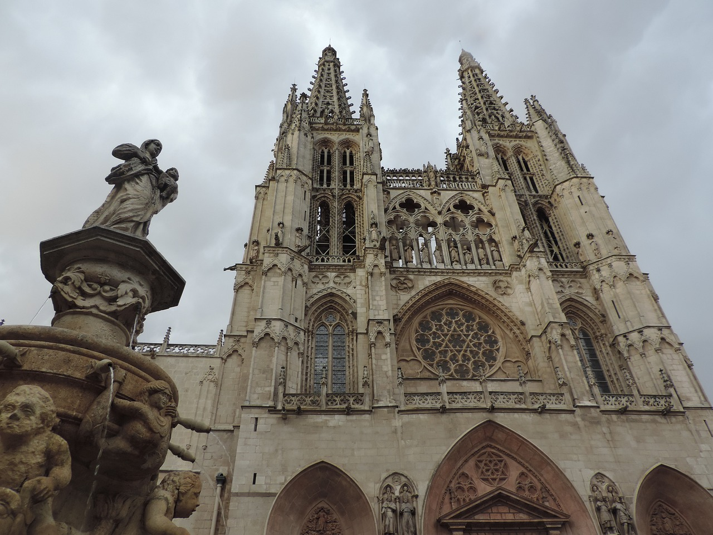
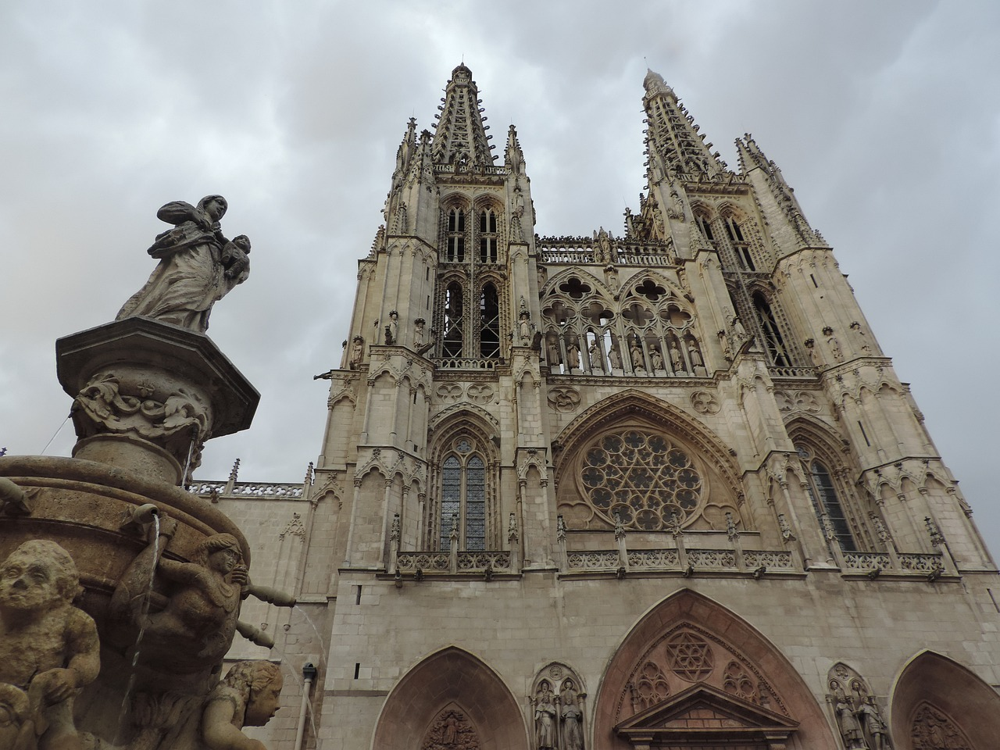
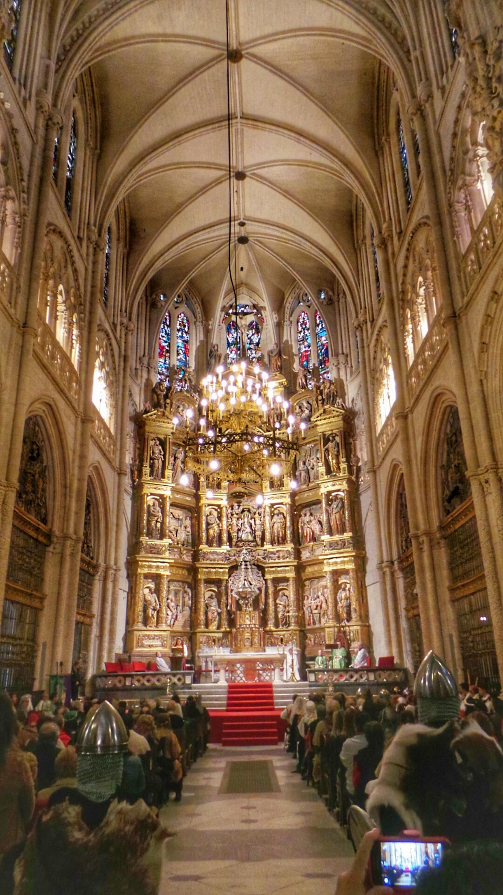
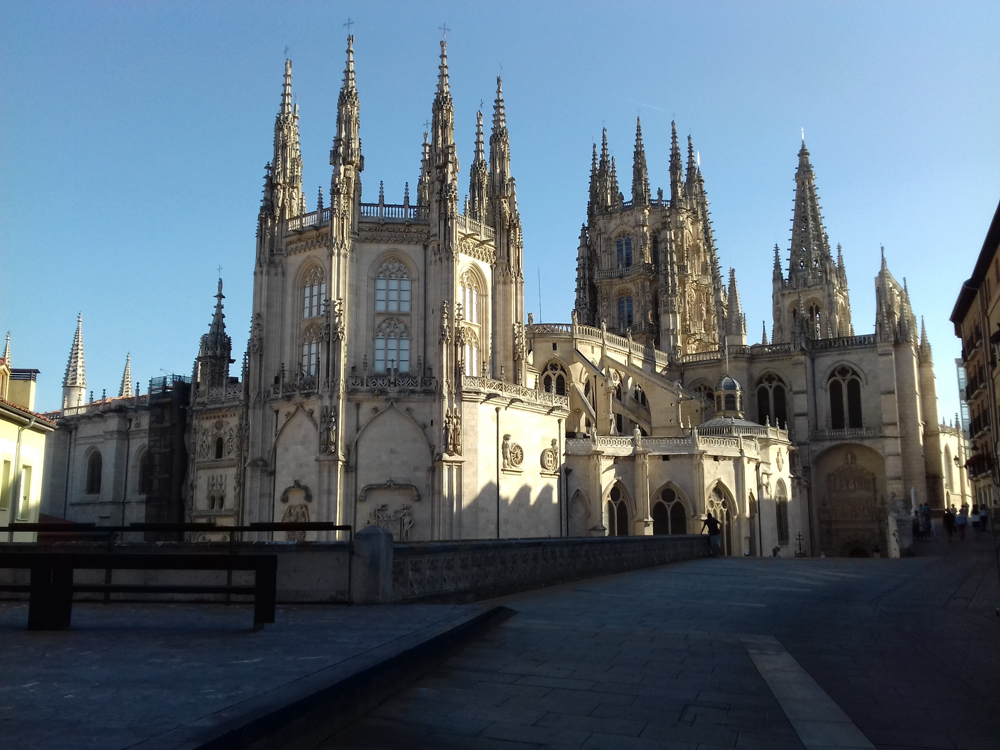

"El legado arquitectónico y cultural de la Catedral de Burgos"
Sus orígenes se remontan al siglo XIII, y desde entonces ha sufrido numerosas transformaciones y vicisitudes que la han convertido en el símbolo de la ciudad y en un referente cultural y artístico a nivel mundial. En esta sección, descubriremos los principales hitos de la historia de la Catedral de Burgos y exploraremos sus secretos y curiosidades más fascinantes. ¡Acompáñanos en este viaje en el tiempo!
- La construcción de la catedral comenzó en 1221 y se completó en 1567, lo que significa que se necesitaron más de 300 años para terminarla.
- La catedral alberga la Capilla del Condestable, una de las obras más famosas del arquitecto Gil de Siloé, que fue construida entre 1482 y 1496
- Durante la Guerra de la Independencia Española, en el siglo XIX, la catedral fue utilizada como cuartel por las tropas francesas, lo que causó graves daños en el edificio.
- En 1921, la Catedral de Burgos fue declarada Monumento Nacional, un reconocimiento a su importancia histórica y cultural.
..jpg) 


